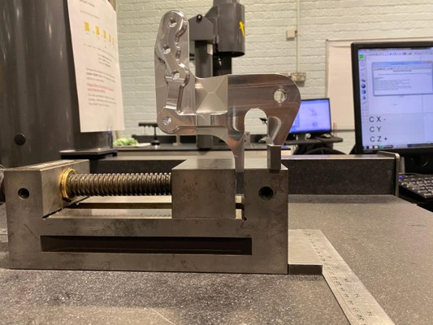
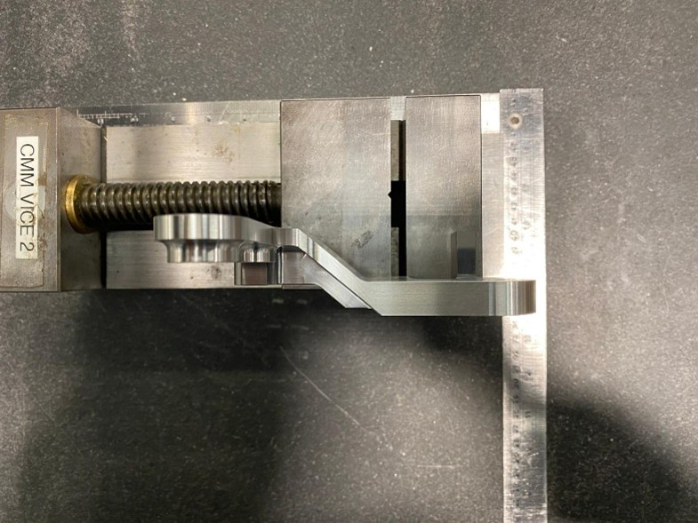
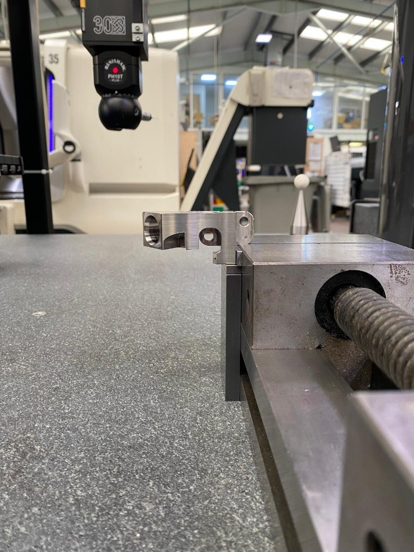
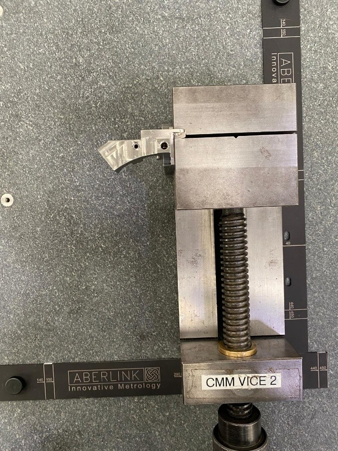

01 / MINIMAL-CONTACT FIXTURING
Workholding should provide stability and repeatability without unnecessarily obstructing the measurement envelope or probe path.




Single-setup objective: where feature accessibility permits, measure as many required features as possible without removing, reorienting or re-fixturing the component.
This can reduce operator intervention and setup time while keeping the inspection sequence continuous.
Workholding should provide stability and repeatability without unnecessarily obstructing the measurement envelope or probe path.
Programming is planned around feature accessibility, probe orientation and measurement sequencing where a continuous setup is practical.
Used as temporary setup/reference aids to establish the intended position before clamping; dimensions and grades are intentionally omitted.
The oblique feature requires suitable probe orientation, approach vector and collision clearance for datum-based positional evaluation.